作品集：实训与实验项目
两段完整的课程实训（企业网络 45 页报告、企业云数据中心 84 页报告，均独立完成），加上六份云平台与集群部署实验记录。每一项都做过故障演练或对照验证，不只写“部署成功”。排障过程另见博客文章。
企业云数据中心运维实训
一段完整的云数据中心交付：三层网络打底，数据库拆多实例，Web 做高可用与负载均衡，全链路加监控，最后用虚拟化平台把物理资源池化。
- 核心—汇聚—接入三层组网，VLAN 按服务器区 / 存储区 / 管理区 / DMZ 分区；汇聚层 MSTP 多实例消除环路并分担链路，VRRP 提供网关冗余
- 核心层运行 OSPF 实现路由自动发现与故障恢复；双防火墙 HRP 主备，配置安全策略，状态实时同步
- MySQL 多实例部署：各实例使用独立端口、socket 与数据目录，业务数据分离存储，并逐个实例做了连通测试
- 源码编译 Nginx + Keepalived 实现 VIP 漂移，HAProxy 做轮询分发与健康检查；实测停主节点后 VIP 漂移到备节点、停后端后故障节点被自动摘除
- Zabbix 采集 Web / MySQL / 主机性能，配置自定义监控项与邮件告警并完成告警测试；FreeVM 平台完成虚拟机创建、集群组建与在线迁移，迁移期间业务不中断
项目详情：报告目录、关键截图与复盘
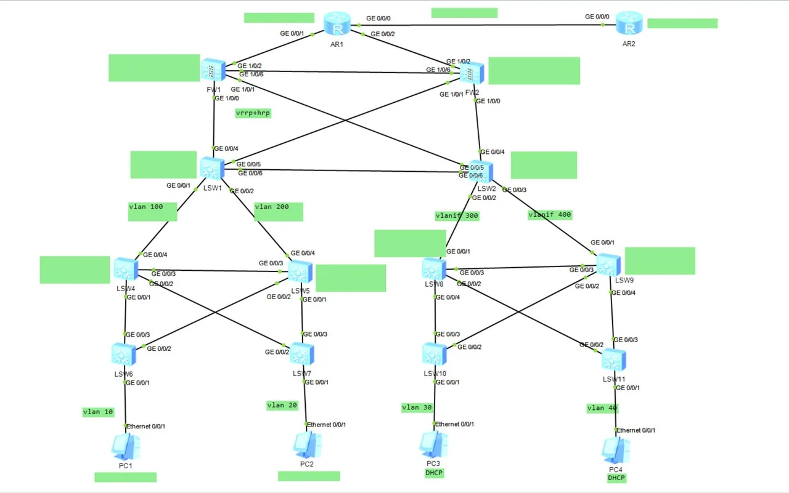
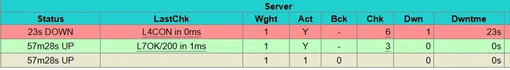
企业网络系统规划与建设实施
从零规划并搭建一套能对外提供服务的企业网络：组网、防火墙安全边界、主从 DNS、三种文件服务，再到 Web 反向代理高可用和运维脚本。
- 核心层＋接入层组网，VLAN 10 / 20 实现广播隔离，WLAN 为移动终端提供无线接入
- USG6000V1 划分 trust / untrust 安全域，配置安全策略与 NAT，控制内外网访问权限
- 主从 DNS：主服务器提供域名正、反向解析，从服务器通过区域文件同步保持一致
- 文件服务全家桶并逐项验证：FTP 的匿名、本地、虚拟用户三种认证模式分别登录上传以验证权限隔离；Samba 完成 Windows 客户端挂载 Linux 共享；NFS 完成挂载与读写验证
- Nginx 反向代理轮询分发 + Keepalived 双机热备对外提供服务；另编写了服务自愈脚本（检测到 Nginx 停止自动重启）和 LAMP 环境一键部署脚本
项目详情：报告目录、关键截图与复盘
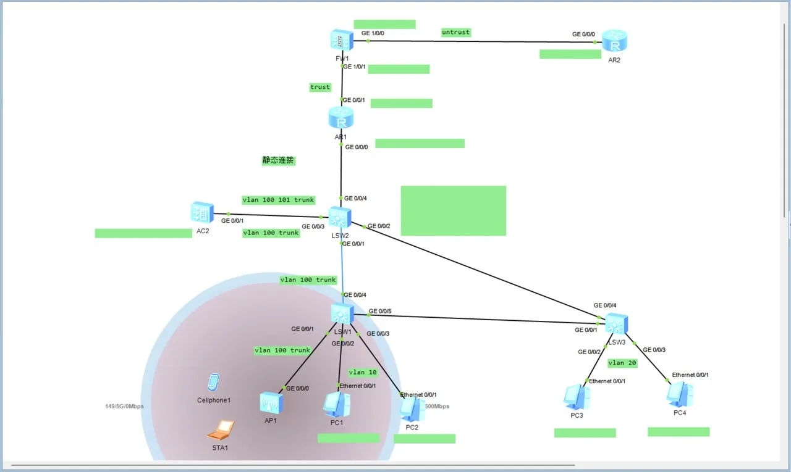
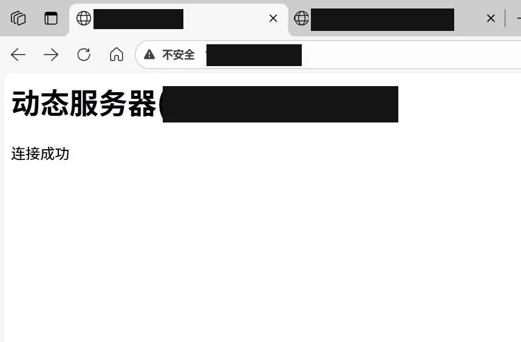
三节点控制平面高可用集群与故障转移
把单控制平面的单点故障拆掉：3 台 Master 堆叠 etcd，HAProxy 负载三台 apiserver，Keepalived 维护统一入口 VIP，并做实故障转移演练。
- 受宿主机内存限制，将 Worker 合并到 3 台 Master（去除控制平面污点），控制平面高可用语义不变：堆叠 etcd 三副本可容忍任意 1 个节点故障
- 解决了负载均衡与 apiserver 同机部署的端口冲突：HAProxy 前端改走 16443 端口，后端转发三台 apiserver，并用 TCP 健康检查自动摘除故障节点
- 实测故障转移：停止主节点 Keepalived 后 VIP 约 3 秒漂移到备节点、原主恢复后约 4 秒抢占回切（RTO ≈ 3 秒），etcd 自动重选 leader
- 用 etcdctl 从成员列表、端点健康、Raft 索引三个维度交叉验证数据一致性，并完成 etcd 快照备份；Nginx 三副本跨节点调度、删 Pod 后约 5 秒自愈重建
- 记录了 6 个真实问题的排查与解决：端口占用、conntrack 缺失、内存低于 preflight 阈值、Calico 清单注解超限、镜像拉取失败、Calico 网段配置未生效导致 BIRD 未就绪
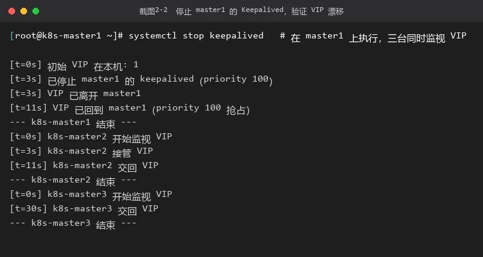
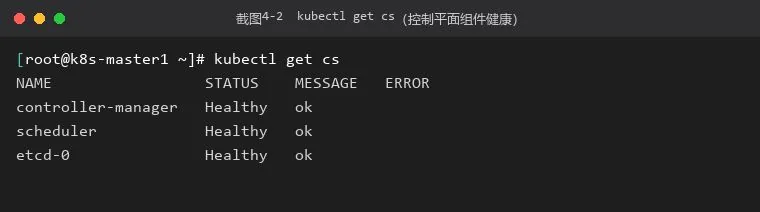
Pod 编排：多容器、资源限制与探针
把 Pod 这个最小调度单元拆成三个维度练透：多容器如何协作、资源限制由谁执行、探针如何决定重启与自愈。
- 多容器 Pod：nginx 主容器 + busybox 辅助容器通过 emptyDir 共享卷交换首页文件，容器内与节点上两种访问方式都验证通过；也确认了 READY 1/2 是辅助容器写完即退出的预期状态，不是异常
- 资源配额落到内核层验证：requests 100Mi / limits 200Mi 写入后，在容器内读到的 cgroup 内存上限与 limits 数值完全一致
- OOMKilled 对照实验：内存占用在限额内时稳定运行，提高到超过 limits 后容器数秒内被终止——内存不可压缩、超限即杀；CPU 可压缩、超限只是限速
- 存活探针自愈验证：删掉容器内首页文件使探针连续失败达到阈值后，容器被自动重启并恢复健康，全程无人干预
- 环境适配：官方完整镜像拉取超时，改用同为官方发布的轻量版镜像完成实验，功能与配置方式一致
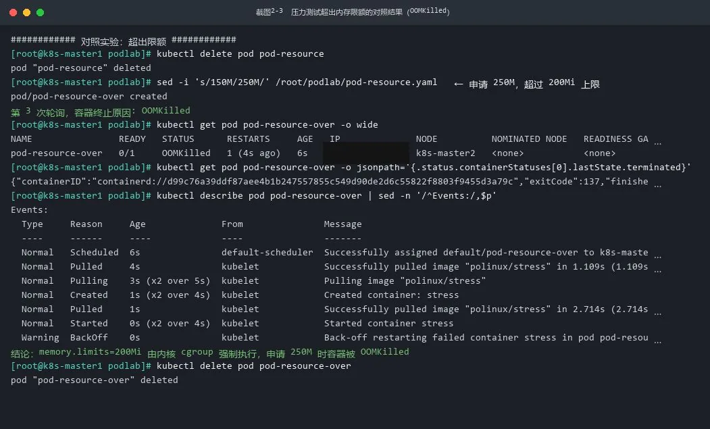
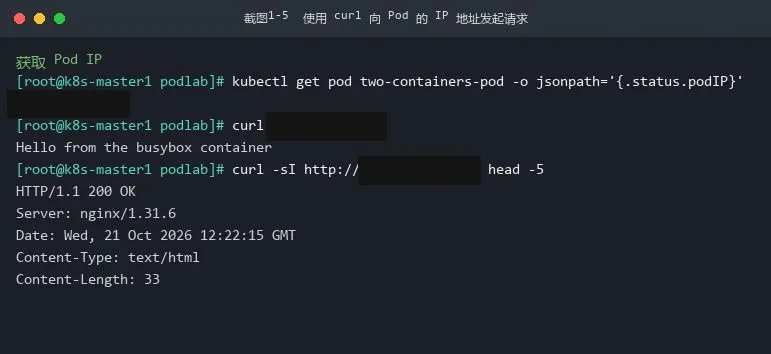
Kubernetes 双节点集群离线部署
在无外网的虚拟机环境里，用本地 YUM 源和离线包完整走通一遍 kubeadm 集群部署，并把踩到的三个坑连同排查路径一起记下来。
- 用本地系统镜像 + 离线安装包搭建 YUM 源，完成 Docker 引擎与 kubeadm / kubelet / kubectl 的离线安装
- kubeadm init 初始化控制平面、join 加入工作节点，双节点均为 Ready，etcd、apiserver 等核心组件全部正常运行
- 配齐集群的硬性前置条件：chrony 时间同步、关闭 swap 与防火墙 / SELinux、开启内核 IP 转发、加载 IPVS 模块
- 三个坑的完整排查记录：时间不同步导致证书校验失败、未关 swap 导致节点 NotReady、未开 IP 转发导致跨节点 Pod 不通——这段经历后来单独写成了一篇博客
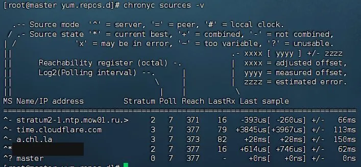
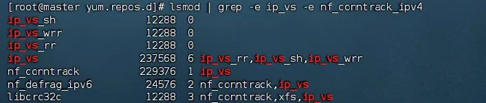
Hadoop 完全分布式集群与高可用
三节点完全分布式部署，并进一步把 NameNode 和 ResourceManager 都做成主备高可用。
- 三节点基础环境统一处理：主机名规划、JDK 安装、SSH 免密登录、ZooKeeper 集群先行部署并完成 Leader 选举
- HDFS NameNode HA：通过 JournalNode 集群共享编辑日志实现主备元数据同步，ZKFC 监控进程配合 ZooKeeper 实现自动故障转移
- YARN ResourceManager HA 采用同样的主备机制，保证资源调度高可用
- 完成 core-site、hdfs-site、yarn-site 等核心配置，HDFS 存储与 YARN 资源调度全链路打通
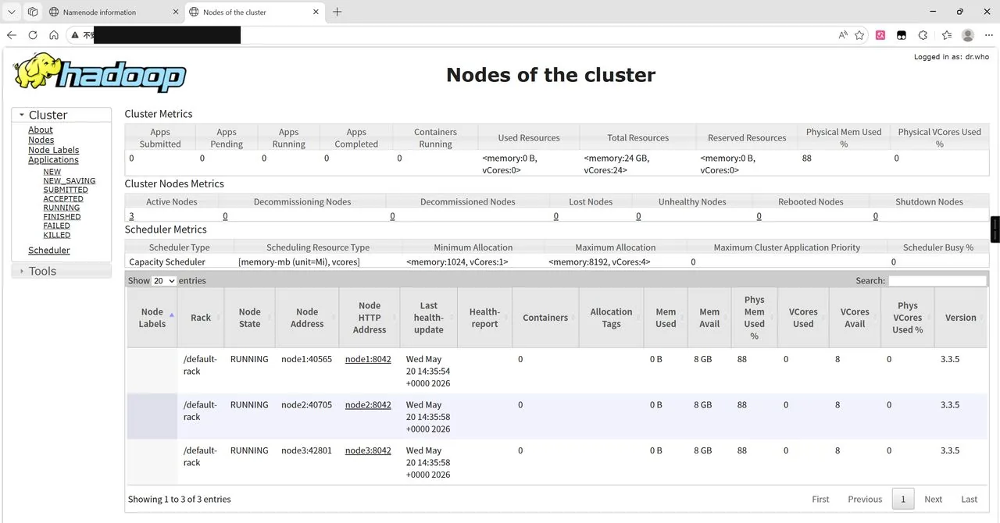
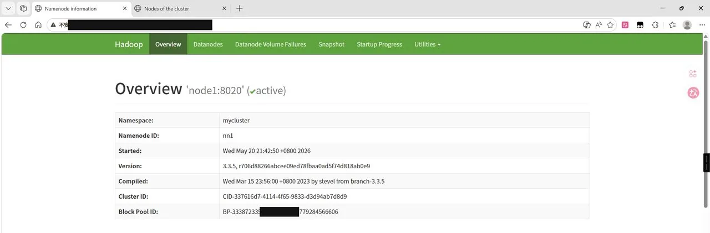
OpenStack 单节点云平台部署
用 RDO All-in-One 在单台虚拟机里自动部署一套完整的 OpenStack，重点练部署前的环境整治。
- 使用 Packstack All-in-One 自动化部署，各组件安装步骤全部完成，适合教学与实验场景快速搭建
- 部署前置工作逐项落实：主机名与 hosts 解析、停用 NetworkManager 与 firewalld、配置软件源、预先创建 Cinder 卷组避免安装中途中断
- 部署后 Horizon 控制台可正常访问，认证、计算、存储、网络等核心模块无报错，单节点云平台环境可用
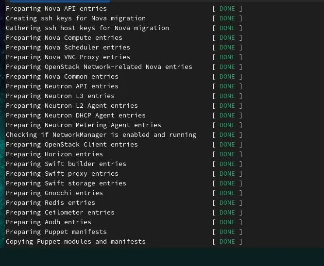
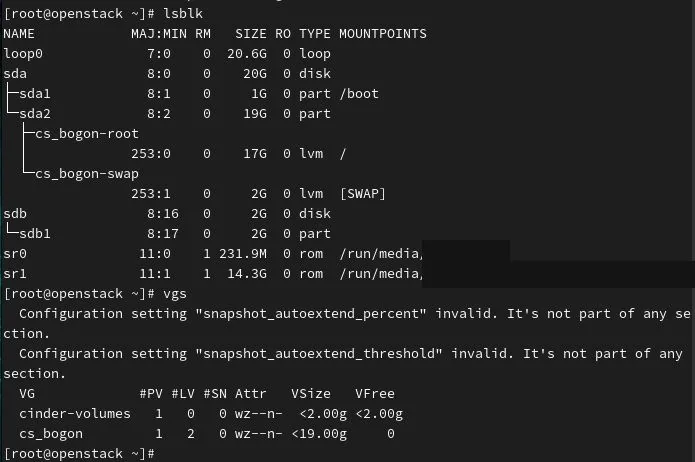
VMware 虚拟化平台与 iSCSI 网络存储
在 VMware Workstation 的嵌套虚拟化环境里装 ESXi，再用 StarWind 给它接上 iSCSI 网络块存储，搭出企业虚拟化数据中心的雏形。
- 完成 ESXi 7.0 的创建与安装，配置静态管理 IP、修改主机名，并通过 F2 完成 root 账户初始配置
- 物理机与 ESXi 主机连通性测试通过，使用 Web Client 图形化登录并管理 ESXi 主机
- 安装 StarWind iSCSI SAN，创建 iSCSI 目标并开启多连接集群支持，将虚拟硬盘关联到目标，再配置访问控制策略
- ESXi 主机与 iSCSI 存储成功对接，管理流、存储流与虚拟机流量的网络划分清晰，各组件通信正常
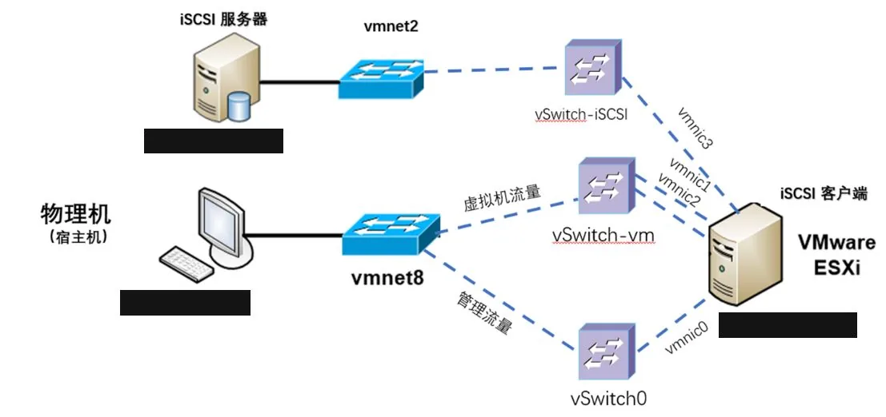
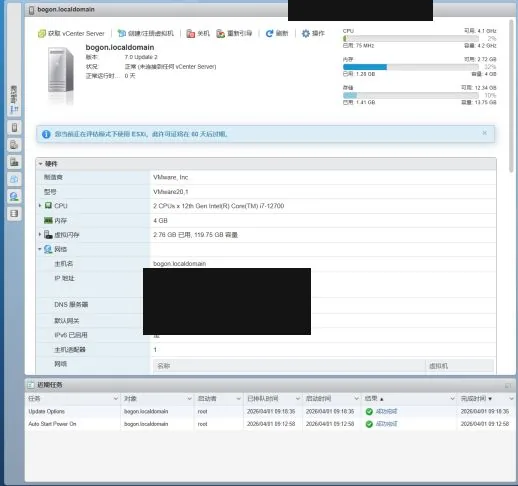